In this project, I register overlapping photographs with projective transformations (homographies), warp them into a common frame with my own inverse-warping code, and blend them into image mosaics. The pipeline is: pick point correspondences by hand, solve for homographies by least squares, inverse-warp with nearest neighbour and bilinear interpolation, blend with weighted averaging (plain feathering and a 2-level Laplacian pyramid), and finally re-project the photos onto a cylinder (A.5).
Points are (x, y) = (column, row), and pixel (0, 0) is the center of the top-left pixel. A homography maps points of image 1 to image 2: \(p' = Hp\). All photos are downscaled so that the longest side is 1000 px before processing.
I shot three sets of photos, each with three overlapping views. Within a set, I rotated the camera about a fixed position between shots, so the views are related by a projective transformation (a homography), and neighbouring photos overlap substantially. Each set is shown from left to right.
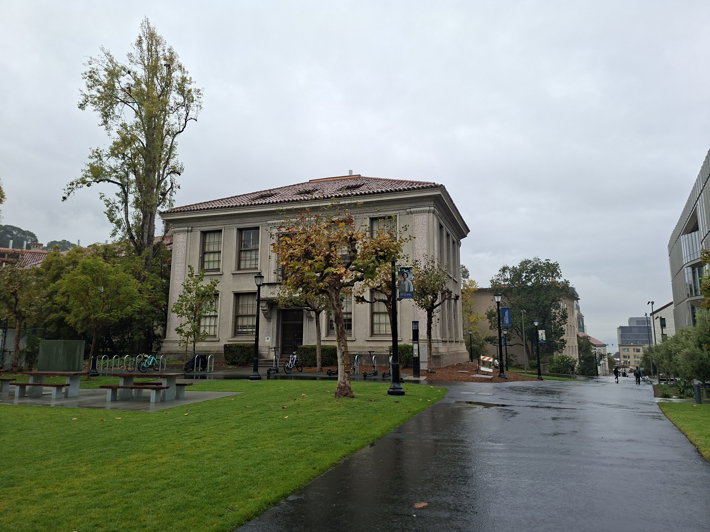
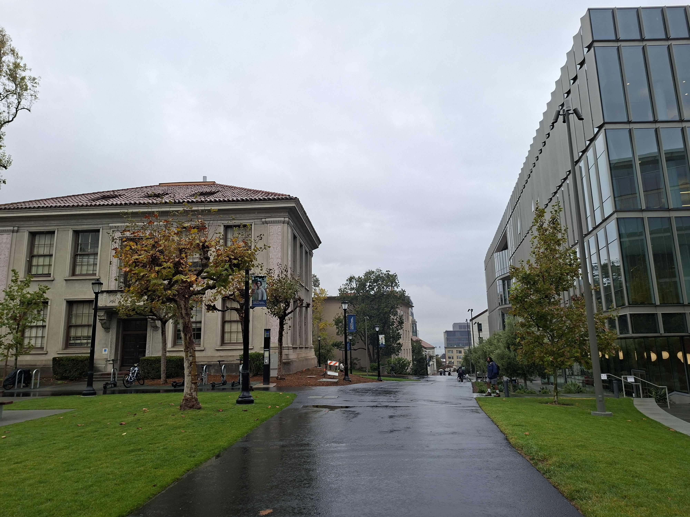
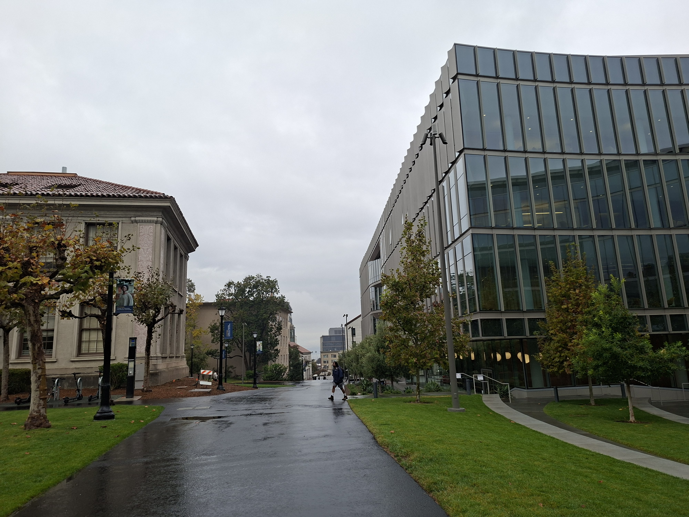
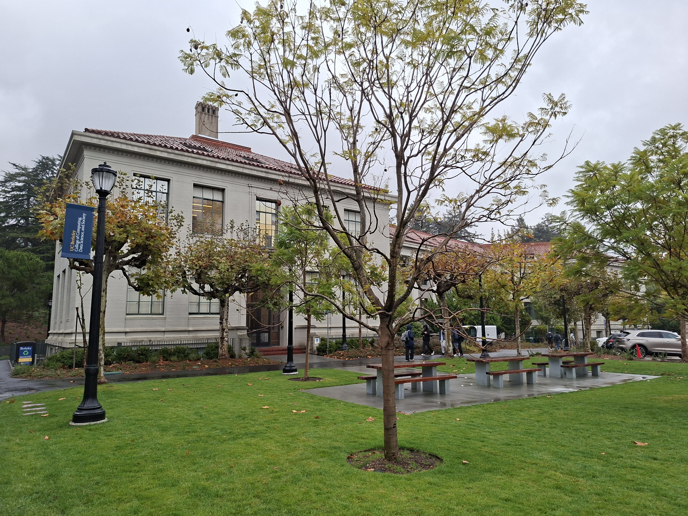
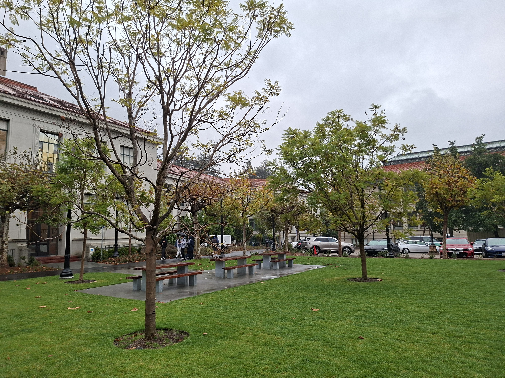
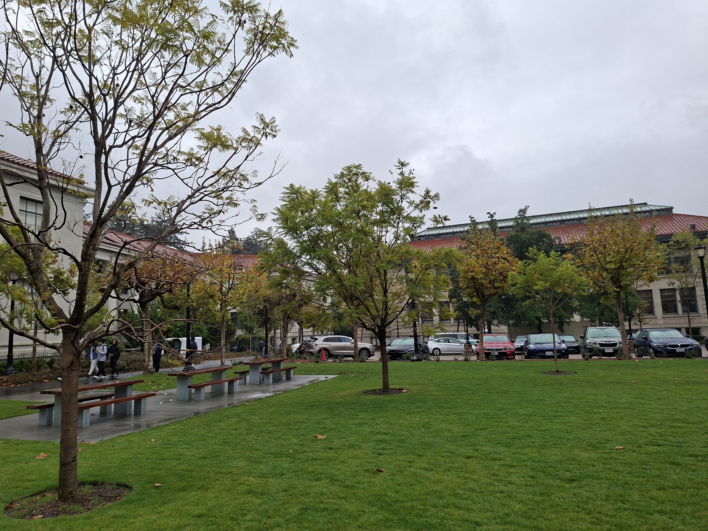
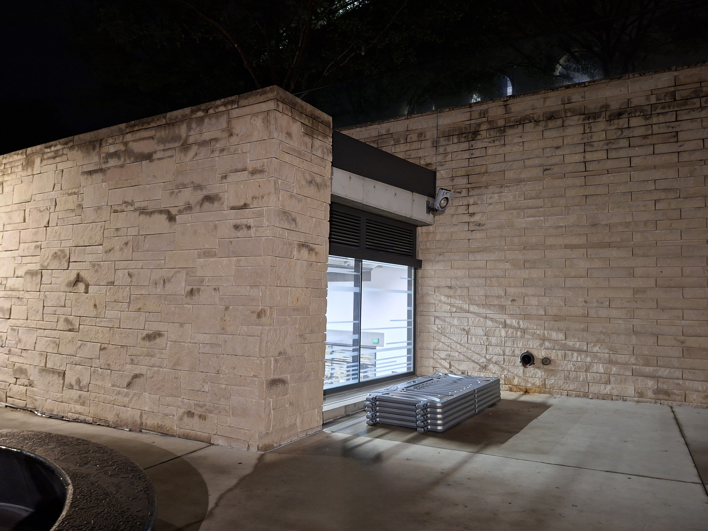
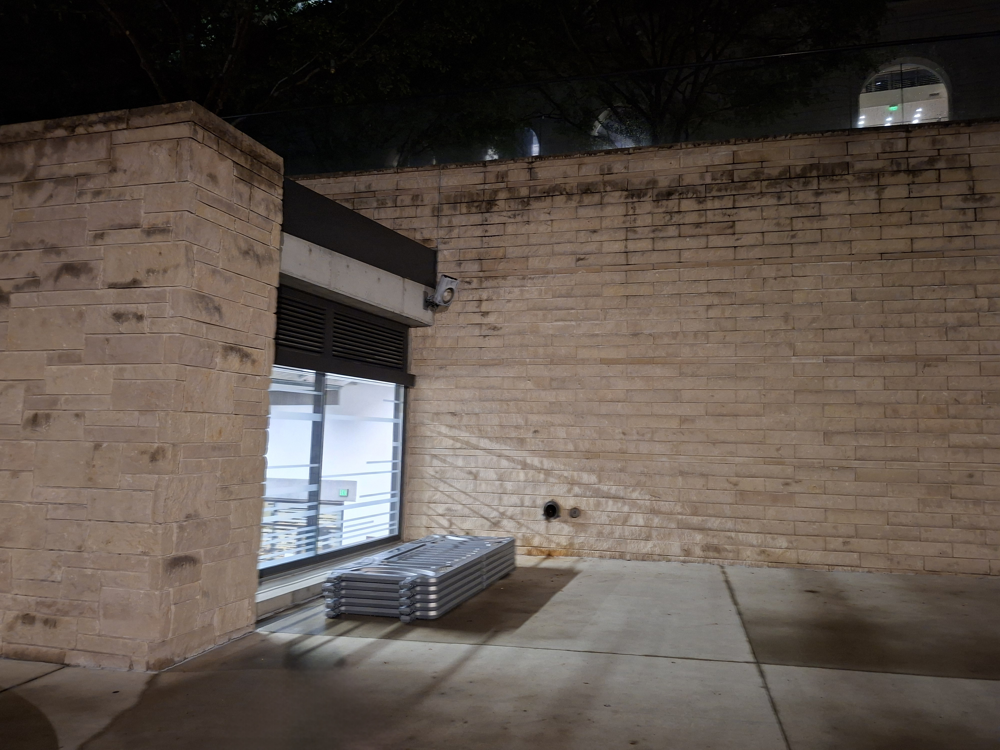
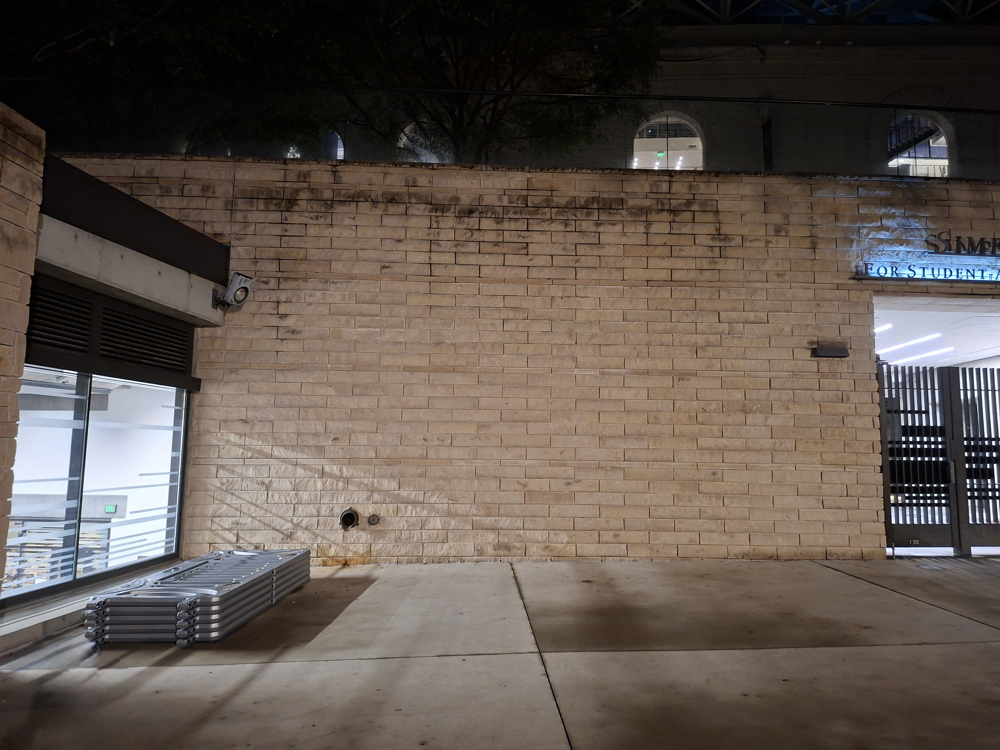
A homography is a 3x3 matrix \(H\) with 8 degrees of freedom (the bottom-right entry is fixed to 1) such that \(p' \simeq Hp\) in
homogeneous coordinates. For one correspondence \((x, y) \rightarrow (x', y')\):
$$ x' = \frac{h_{11}x + h_{12}y + h_{13}}{h_{31}x + h_{32}y + 1}, \qquad y' = \frac{h_{21}x + h_{22}y + h_{23}}{h_{31}x + h_{32}y + 1} $$
Multiplying out the denominator makes both equations linear in the eight unknowns:
$$ h_{11}x + h_{12}y + h_{13} - h_{31}xx' - h_{32}yx' = x' $$
$$ h_{21}x + h_{22}y + h_{23} - h_{31}xy' - h_{32}yy' = y' $$
So each correspondence contributes two rows to the system \(A\mathbf{h} = \mathbf{b}\), where
\(\mathbf{h} = [h_{11}, h_{12}, h_{13}, h_{21}, h_{22}, h_{23}, h_{31}, h_{32}]^T\):
$$ \begin{bmatrix} x & y & 1 & 0 & 0 & 0 & -xx' & -yx' \\ 0 & 0 & 0 & x & y & 1 & -xy' & -yy' \end{bmatrix} \mathbf{h} = \begin{bmatrix} x' \\ y' \end{bmatrix} $$
Four correspondences give a square system, but a couple of pixels of click error then change \(H\) a lot. Therefore, I click
8 correspondences per image pair (16 equations for 8 unknowns) and solve the overdetermined system in the least-squares
sense with numpy.linalg.lstsq. I picked the points manually using a matplotlib ginput window that shows both
images side by side, choosing distinctive, static features (corners of windows, roofs and buildings) that are far from the camera,
so that parallax is small.
def build_system(im1_pts, im2_pts):
p = np.asarray(im1_pts, dtype=np.float64)
q = np.asarray(im2_pts, dtype=np.float64)
if p.shape != q.shape or p.ndim != 2 or p.shape[1] != 2:
raise ValueError("im1_pts and im2_pts must both be n-by-2")
n = len(p)
if n < 4:
raise ValueError("need at least 4 correspondences")
x, y = p[:, 0], p[:, 1]
xp, yp = q[:, 0], q[:, 1]
A = np.zeros((2 * n, 8))
b = np.zeros(2 * n)
A[0::2, 0], A[0::2, 1], A[0::2, 2] = x, y, 1
A[0::2, 6], A[0::2, 7] = -x * xp, -y * xp
b[0::2] = xp
A[1::2, 3], A[1::2, 4], A[1::2, 5] = x, y, 1
A[1::2, 6], A[1::2, 7] = -x * yp, -y * yp
b[1::2] = yp
return A, b
def computeH(im1_pts, im2_pts):
A, b = build_system(im1_pts, im2_pts)
h, *_ = np.linalg.lstsq(A, b, rcond=None)
return np.append(h, 1.0).reshape(3, 3)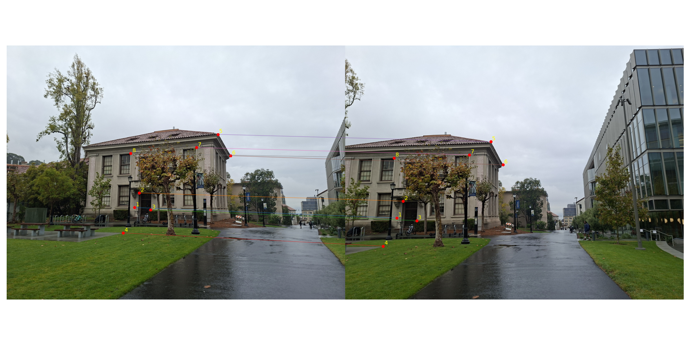
Below is the full 16x8 system \(A\mathbf{h} = \mathbf{b}\) for these 8 correspondences:
System A h = b (h = [h11 h12 h13 h21 h22 h23 h31 h32]^T)
A =
[[ 377.07 477.78 1. 0. 0. 0. -57443.46 -72785.01]
[ 0. 0. 0. 377.07 477.78 1. -191790.63 -243012.57]
[ 391.83 434.86 1. 0. 0. 0. -67048.9 -74412.17]
[ 0. 0. 0. 391.83 434.86 1. -179849.5 -199600.48]
[ 425.36 484.49 1. 0. 0. 0. -89902.84 -102399.5 ]
[ 0. 0. 0. 425.36 484.49 1. -219773.75 -250322.69]
[ 343.54 552.89 1. 0. 0. 0. -38511.47 -61979.96]
[ 0. 0. 0. 343.54 552.89 1. -203304.06 -327195.42]
[ 623.87 261.83 1. 0. 0. 0. -268256.88 -112584.29]
[ 0. 0. 0. 623.87 261.83 1. -176737.84 -74174.81]
[ 661.43 324.87 1. 0. 0. 0. -308359.08 -151456.21]
[ 0. 0. 0. 661.43 324.87 1. -232622.73 -114256.92]
[ 560.83 300.73 1. 0. 0. 0. -205795.01 -110351.54]
[ 0. 0. 0. 560.83 300.73 1. -180693.79 -96891.75]
[ 366.34 318.17 1. 0. 0. 0. -52860.56 -45908.91]
[ 0. 0. 0. 366.34 318.17 1. -121471.61 -105496.98]]
b =
[152.34 508.63 171.12 459. 211.36 516.68 112.1 591.79 429.99 283.29 466.2 351.7 366.95 322.19 144.29 331.58]Solving in the least-squares sense gives the homography below. Its mean reprojection error over the 8 clicked points is 1.58 px.
$$ H = \begin{bmatrix} 1.432584 & -0.022965 & -351.905391 \\ 0.184106 & 1.287335 & -97.944158 \\ 0.000381 & 0.000021 & 1.000000 \end{bmatrix} $$The mean reprojection error is the average distance between \(Hp\) and the clicked \(p'\) over the correspondences of a pair. The full systems are in set 1, set 2, and set 3.
| Pair | Recovered H | Mean reprojection error |
|---|---|---|
| Set 1, image 1 → 2 | \( \begin{bmatrix} 1.432584 & -0.022965 & -351.905391 \\ 0.184106 & 1.287335 & -97.944158 \\ 0.000381 & 0.000021 & 1.000000 \end{bmatrix} \) | 1.58 px |
| Set 1, image 2 → 3 | \( \begin{bmatrix} 1.493709 & -0.043001 & -326.699246 \\ 0.234157 & 1.289729 & -125.052900 \\ 0.000512 & -0.000020 & 1.000000 \end{bmatrix} \) | 0.84 px |
| Set 2, image 1 → 2 | \( \begin{bmatrix} 1.836541 & -0.021362 & -575.524924 \\ 0.315735 & 1.631305 & -248.136292 \\ 0.000701 & 0.000201 & 1.000000 \end{bmatrix} \) | 1.57 px |
| Set 2, image 2 → 3 | \( \begin{bmatrix} 1.341319 & -0.037750 & -275.431104 \\ 0.161069 & 1.144972 & -73.120452 \\ 0.000395 & -0.000114 & 1.000000 \end{bmatrix} \) | 1.21 px |
| Set 3, image 1 → 2 | \( \begin{bmatrix} 1.543063 & -0.049451 & -364.479142 \\ 0.224328 & 1.280306 & -118.498924 \\ 0.000527 & -0.000053 & 1.000000 \end{bmatrix} \) | 1.91 px |
| Set 3, image 2 → 3 | \( \begin{bmatrix} 1.546946 & -0.051262 & -375.822690 \\ 0.243862 & 1.291595 & -124.326241 \\ 0.000579 & -0.000050 & 1.000000 \end{bmatrix} \) | 0.63 px |
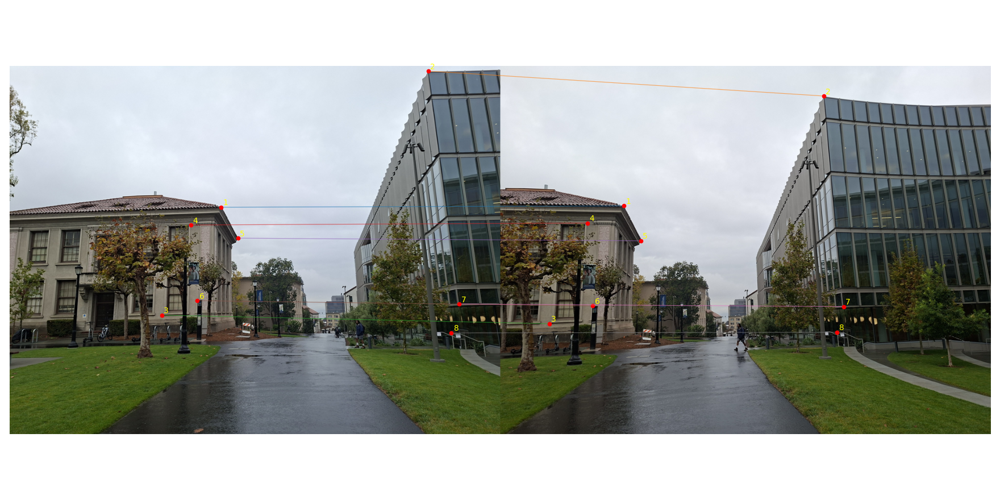
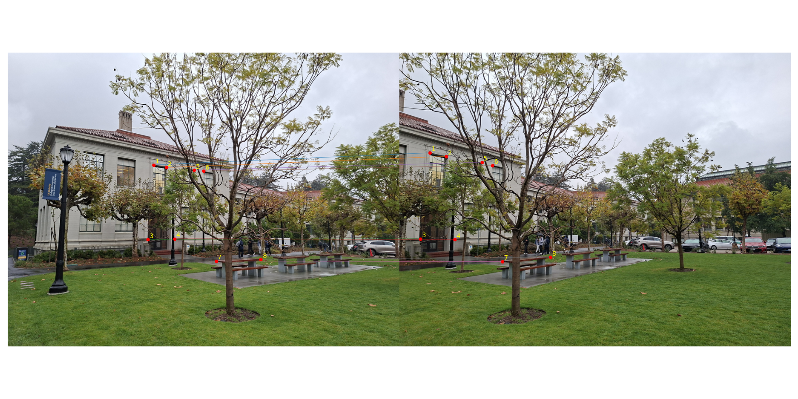
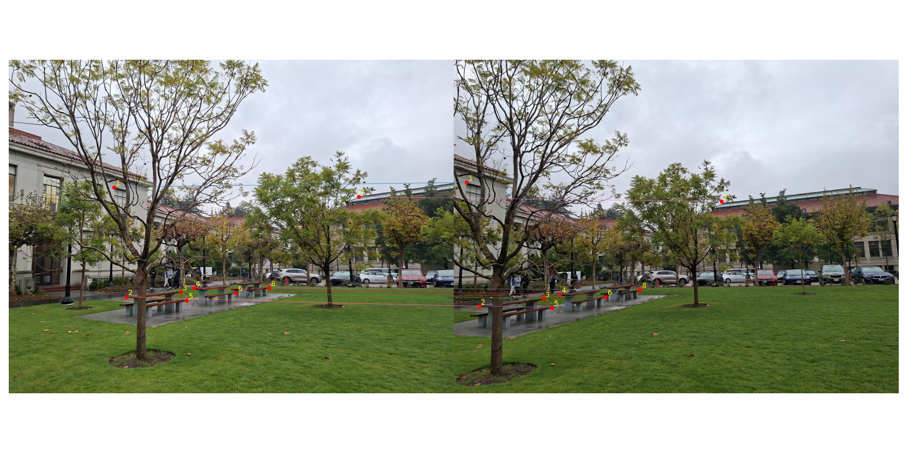
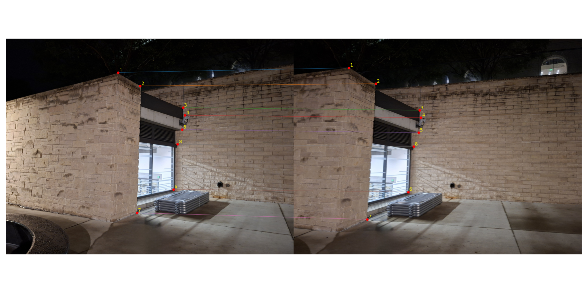
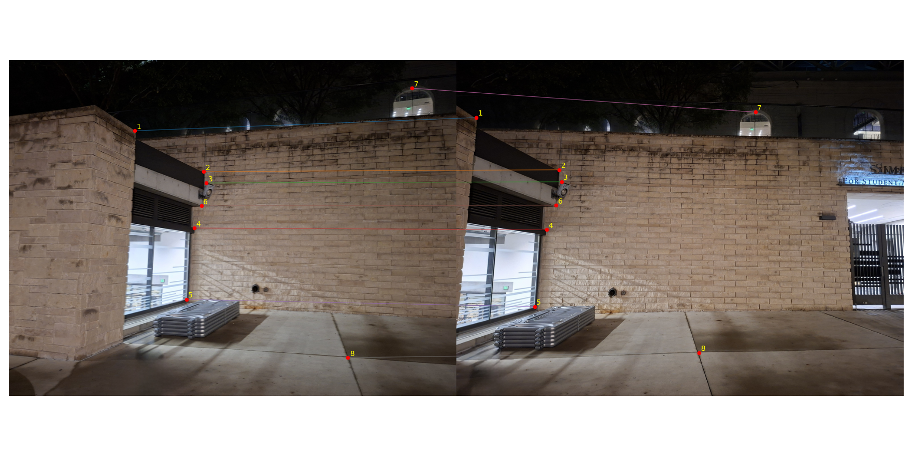
To warp an image by \(H\), I work backwards from the output so that there are no holes:
Nearest neighbour rounds \((x, y)\) to the closest pixel and copies it. Bilinear takes the four surrounding pixels and weights them by the fractional offsets. With \(x_0 = \lfloor x \rfloor\), \(y_0 = \lfloor y \rfloor\), \(f_x = x - x_0\) and \(f_y = y - y_0\): $$ I(x, y) = (1-f_x)(1-f_y)I(x_0, y_0) + f_x(1-f_y)I(x_0+1, y_0) + (1-f_x)f_yI(x_0, y_0+1) + f_xf_yI(x_0+1, y_0+1) $$ Both are written from scratch and vectorized with NumPy (processed in row chunks to bound memory).
def _sample(im, sx, sy, interp):
h, w, C = im.shape
inside = (sx >= 0) & (sx <= w - 1) & (sy >= 0) & (sy <= h - 1)
vals = np.zeros((sx.size, C))
x, y = sx[inside], sy[inside]
if interp == "nearest":
xi = np.rint(x).astype(int)
yi = np.rint(y).astype(int)
vals[inside] = im[yi, xi]
elif interp == "bilinear":
x0 = np.clip(np.floor(x).astype(int), 0, max(w - 2, 0))
y0 = np.clip(np.floor(y).astype(int), 0, max(h - 2, 0))
x1 = np.minimum(x0 + 1, w - 1)
y1 = np.minimum(y0 + 1, h - 1)
fx = (x - x0)[:, None]
fy = (y - y0)[:, None]
vals[inside] = (im[y0, x0] * (1 - fx) * (1 - fy) + im[y0, x1] * fx * (1 - fy) +
im[y1, x0] * (1 - fx) * fy + im[y1, x1] * fx * fy)
else:
raise ValueError(interp)
return vals, inside
def _warp(im, H, interp, out_shape=None, offset=None):
C = im.shape[2]
if out_shape is None or offset is None:
x0, y0, x1, y1 = _bbox(im.shape, H)
offset = (x0, y0)
out_shape = (y1 - y0 + 1, x1 - x0 + 1)
oh, ow = out_shape
Hinv = np.linalg.inv(H)
out = np.zeros((oh, ow, C))
xs = np.arange(ow) + offset[0]
rows = max(1, 1_500_000 // ow)
for r0 in range(0, oh, rows):
r1 = min(oh, r0 + rows)
ys = np.arange(r0, r1) + offset[1]
X, Y = np.meshgrid(xs, ys)
pts = np.stack([X.ravel(), Y.ravel(), np.ones(X.size)])
s = Hinv @ pts
z = s[2]
z = np.where(np.abs(z) > 1e-12, z, np.nan)
with np.errstate(invalid="ignore"):
sx, sy = s[0] / z, s[1] / z
vals, _ = _sample(im, sx, sy, interp)
out[r0:r1] = vals.reshape(r1 - r0, ow, C)
return out, tuple(offset)
def warpImageNearestNeighbour(im, H, out_shape=None, offset=None):
out, off = _warp(_premult(im), H, "nearest", out_shape, offset)
return _unpremult(out), off
def warpImageBilinear(im, H, out_shape=None, offset=None):
out, off = _warp(_premult(im), H, "bilinear", out_shape, offset)
return _unpremult(out), offTo test the warp, I rectify a known rectangle. The output is an upright rectangle whose width is the average length of the clicked top and bottom edges (so the result stays near the photo's own resolution), and whose height follows from the known aspect ratio. \(H\) maps the four clicked corners to the four corners of that rectangle, and the image is then inverse-warped with both interpolation methods.
I photographed this sign from below and at an angle, then clicked its four corners (top-left, top-right, bottom-right, bottom-left). The sign is a portrait rectangle; I do not know its exact dimensions, so I estimated its proportions from the clicked corners corrected for perspective. The target aspect ratio (width : height) is 2 : 3, giving a rectified image of 101 × 152 px.
| Corner | Clicked point in photo (x, y) | Target point (x', y') |
|---|---|---|
| Top-left | (355.5, 404.7) | (0.0, 0.0) |
| Top-right | (447.7, 429.4) | (101.0, 0.0) |
| Bottom-right | (467.2, 577.4) | (101.0, 151.5) |
| Bottom-left | (362.0, 560.5) | (0.0, 151.5) |
The system is exactly determined (4 correspondences, 8 equations), so the reprojection error is 0. The recovered homography is:
$$ H = \begin{bmatrix} 1.126481 & -0.046937 & -381.476430 \\ -0.330784 & 1.236088 & -382.642389 \\ -0.001057 & 0.001142 & 1.000000 \end{bmatrix} $$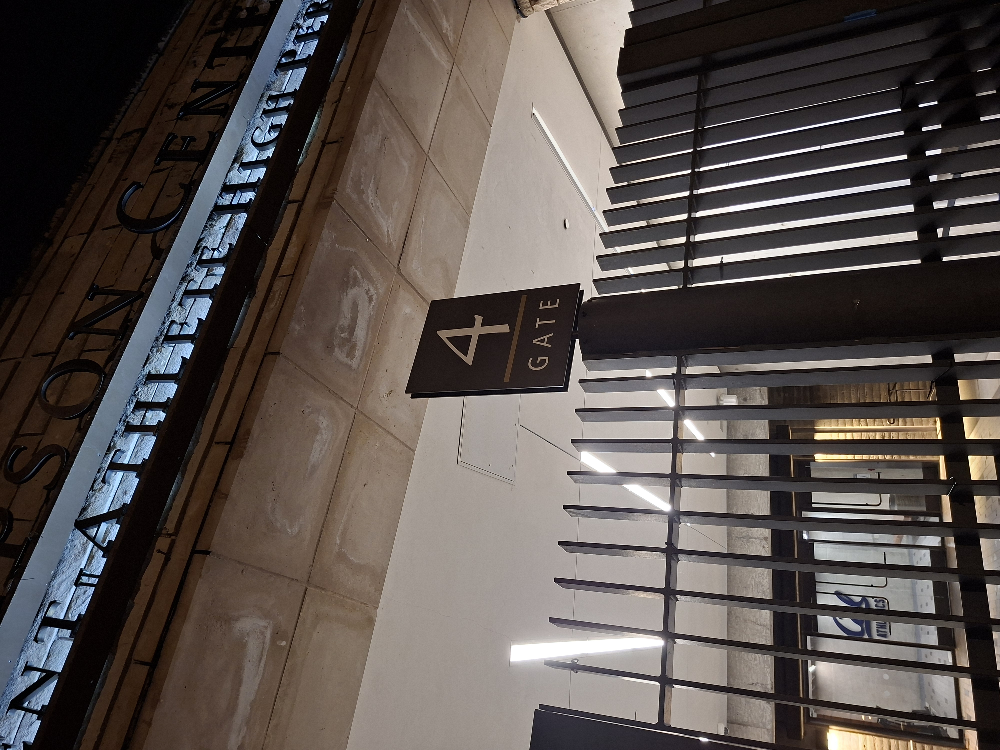
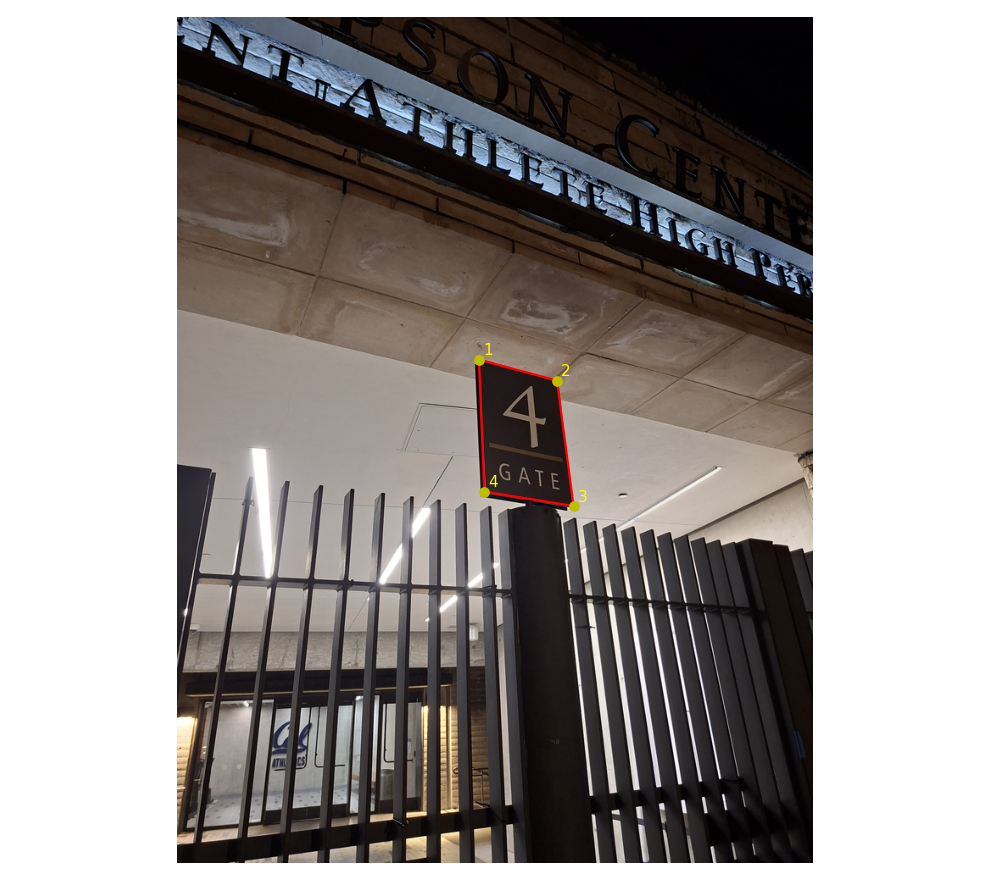
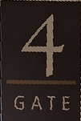
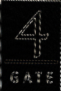
im1_pts (x,y):
[[355.51 404.69]
[447.71 429.37]
[467.19 577.42]
[362. 560.54]]
im2_pts (x,y):
[[ 0. 0. ]
[101. 0. ]
[101. 151.5]
[ 0. 151.5]]
System A h = b (h = [h11 h12 h13 h21 h22 h23 h31 h32]^T)
A =
[[ 355.51 404.69 1. 0. 0. 0. -0. -0. ]
[ 0. 0. 0. 355.51 404.69 1. -0. -0. ]
[ 447.71 429.37 1. 0. 0. 0. -45217.65 -43364.95]
[ 0. 0. 0. 447.71 429.37 1. -0. -0. ]
[ 467.19 577.42 1. 0. 0. 0. -47185.12 -58317.71]
[ 0. 0. 0. 467.19 577.42 1. -70777.68 -87476.56]
[ 362. 560.54 1. 0. 0. 0. -0. -0. ]
[ 0. 0. 0. 362. 560.54 1. -54841.19 -84918.86]]
b =
[ 0. 0. 101. 0. 101. 151.5 0. 151.5]
Recovered H =
[[ 1.126481 -0.046937 -381.47643 ]
[ -0.330784 1.236088 -382.642389]
[ -0.001057 0.001142 1. ]]
Reprojection error per point (px): [0. 0. 0. 0.] mean = 0.000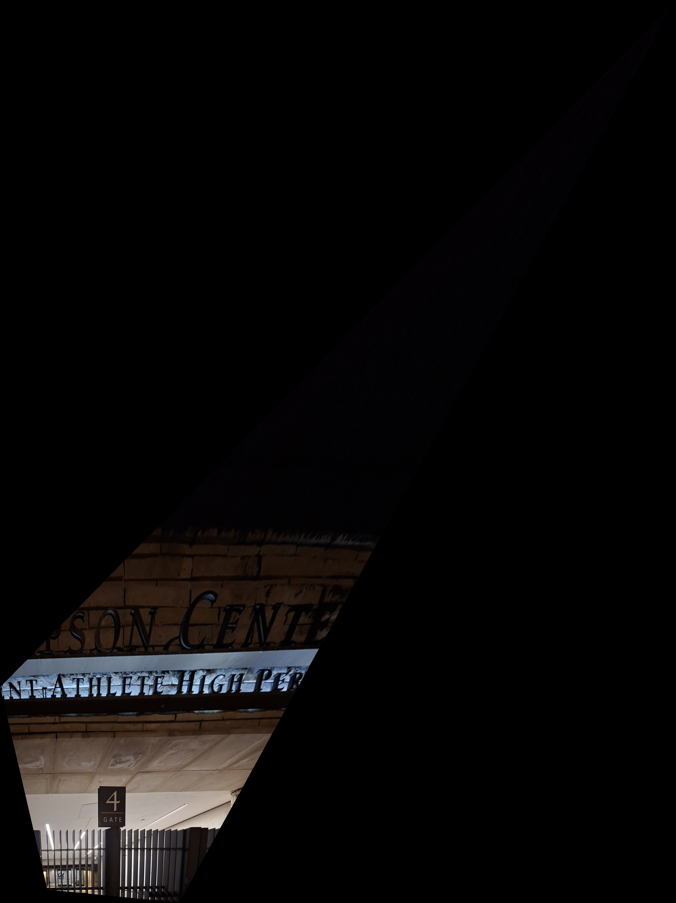
A second photo of a rectangular sign, again shot from below at an angle. This sign is a landscape rectangle, and its proportions are estimated the same way. The target aspect ratio (width : height) is 7 : 4, giving a rectified image of 342 × 195 px.
| Corner | Clicked point in photo (x, y) | Target point (x', y') |
|---|---|---|
| Top-left | (102.3, 591.7) | (0.0, 0.0) |
| Top-right | (430.8, 512.5) | (341.8, 0.0) |
| Bottom-right | (433.4, 737.2) | (341.8, 195.3) |
| Bottom-left | (93.2, 798.2) | (0.0, 195.3) |
The system is exactly determined (4 correspondences, 8 equations), so the reprojection error is 0. The recovered homography is:
$$ H = \begin{bmatrix} 1.350300 & 0.059447 & -173.256686 \\ 0.278743 & 1.156099 & -712.577040 \\ 0.000404 & 0.000215 & 1.000000 \end{bmatrix} $$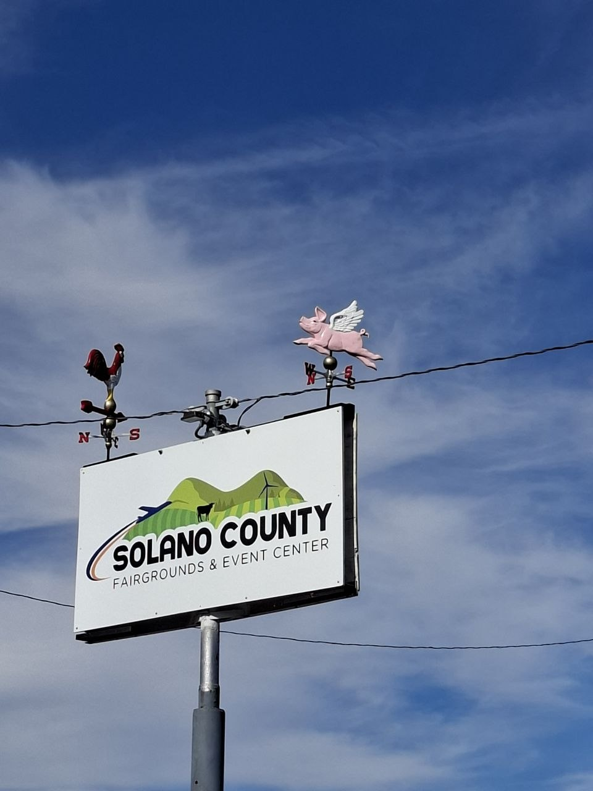
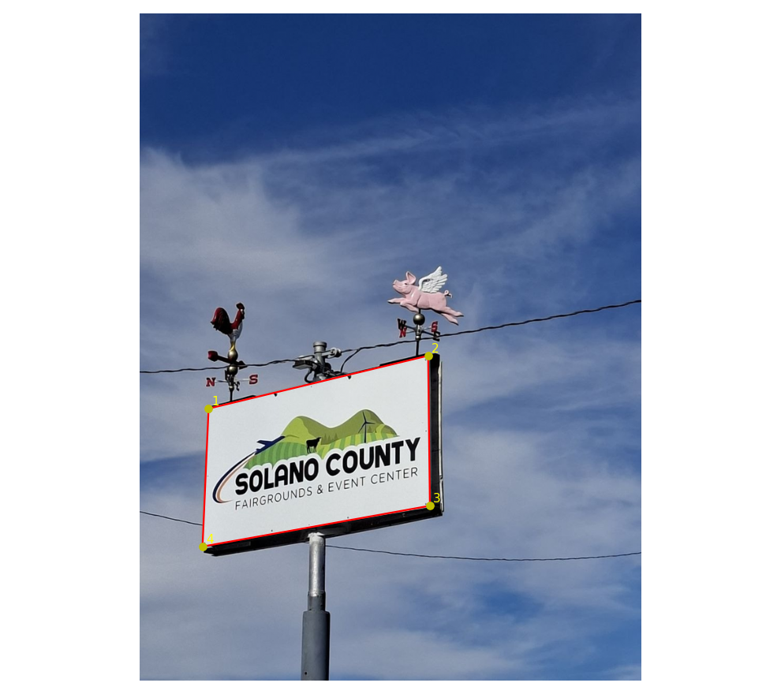
im1_pts (x,y):
[[102.26 591.71]
[430.83 512.49]
[433.43 737.16]
[ 93.17 798.2 ]]
im2_pts (x,y):
[[ 0. 0. ]
[341.84 0. ]
[341.84 195.34]
[ 0. 195.34]]
System A h = b (h = [h11 h12 h13 h21 h22 h23 h31 h32]^T)
A =
[[ 102.26 591.71 1. 0. 0. 0. -0. -0. ]
[ 0. 0. 0. 102.26 591.71 1. -0. -0. ]
[ 430.83 512.49 1. 0. 0. 0. -147274.92 -175188.08]
[ 0. 0. 0. 430.83 512.49 1. -0. -0. ]
[ 433.43 737.16 1. 0. 0. 0. -148162.81 -251990.88]
[ 0. 0. 0. 433.43 737.16 1. -84664.47 -143994.79]
[ 93.17 798.2 1. 0. 0. 0. -0. -0. ]
[ 0. 0. 0. 93.17 798.2 1. -18199.28 -155917.93]]
b =
[ 0. 0. 341.84 0. 341.84 195.34 0. 195.34]
Recovered H =
[[ 1.3503 0.059447 -173.256686]
[ 0.278743 1.156099 -712.57704 ]
[ 0.000404 0.000215 1. ]]
Reprojection error per point (px): [0. 0. 0. 0.] mean = 0.000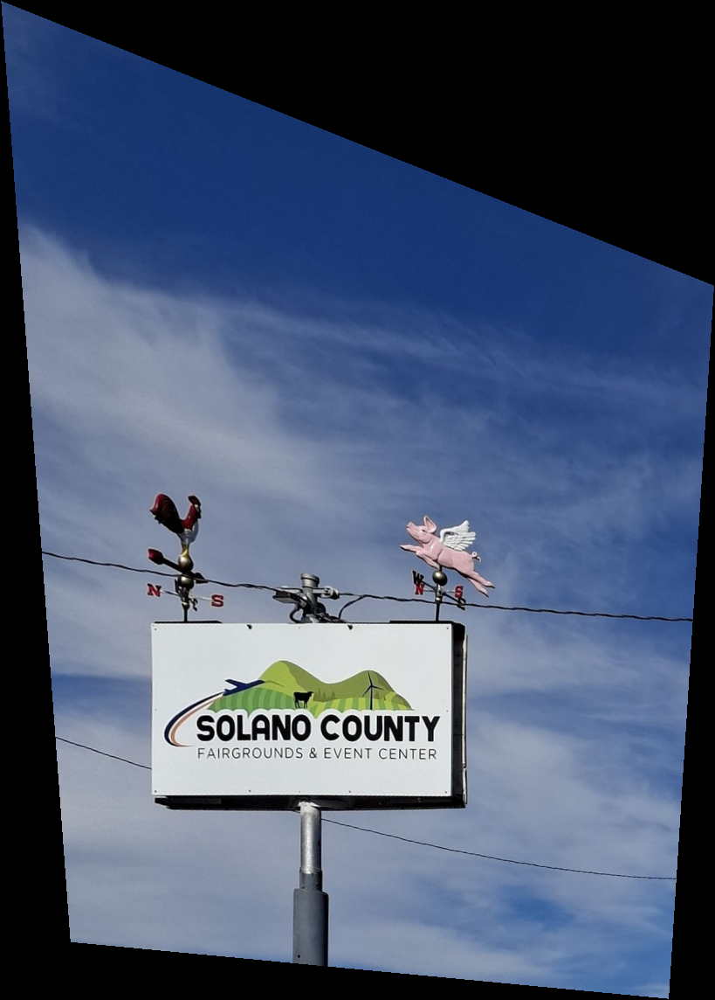
Quality. Nearest neighbour copies one source pixel to each output pixel, so straight edges that are not axis-aligned come out
as staircases, thin lines can break up or change thickness, and fine texture can shimmer. Bilinear averages four neighbours, so
edges are smooth and continuous, at the price of slight blurring since it acts as a small low-pass filter. The difference images above
(|NN - Bilinear| x 5) are concentrated along edges and high-contrast detail, such as the outlines of the numeral and letters,
while flat regions agree. Neither method handles strong minification well, since both sample the source without pre-filtering, so
heavily shrunk regions can alias.
Speed. Nearest neighbour needs one memory lookup per output pixel and channel. Bilinear needs four lookups plus a handful
of multiplies and adds, so it does more work per pixel. The measured runtimes of the two functions on the rectified images (from the
script's timer) are:
| Rectified image | Nearest Neighbour (seconds) | Bilinear (seconds) |
|---|---|---|
| "4 GATE" sign | 0.022 | 0.029 (1.3x slower) |
| Solano County sign | 0.021 | 0.040 (2.0x slower) |
For the mosaics, I always use bilinear, since the extra cost is small compared with the quality gain, and a visible seam would be far worse than slight blur.
def weight_map(alpha):
m = np.pad(alpha > 0.5, 1)
d = ndimage.distance_transform_edt(m)[1:-1, 1:-1]
return d / (d.max() + 1e-9)
def blend_images(colors, alphas, weights, mode="twoband", sigma=5.0):
W = np.stack(weights)
Wsum = W.sum(axis=0)
denom = np.maximum(Wsum, 1e-9)[..., None]
if mode == "feather":
out = sum(w[..., None] * c for w, c in zip(weights, colors)) / denom
elif mode == "twoband":
lows, highs = [], []
for c, a in zip(colors, alphas):
m = (a > 0.5).astype(float)
# normalized blur: don't let empty (black) pixels leak into the low band
low = ndimage.gaussian_filter(c * m[..., None], sigma=(sigma, sigma, 0))
low /= ndimage.gaussian_filter(m, sigma)[..., None] + 1e-9
lows.append(low * m[..., None])
highs.append((c - low) * m[..., None])
low_out = sum(w[..., None] * l for w, l in zip(weights, lows)) / denom
idx = np.argmax(W, axis=0)[None, ..., None]
high_out = np.take_along_axis(np.stack(highs), idx, axis=0)[0]
out = low_out + high_out
else:
raise ValueError("blend must be 'feather' or 'twoband'")
out = np.clip(out, 0, 1)
out[Wsum <= 1e-9] = 0
alpha = (Wsum > 1e-9).astype(float)
return np.dstack([out, alpha])
def build_mosaic(images, Hs, blend="twoband", sigma=5.0, max_pixels=60e6):
boxes = [_bbox(im.shape, H) for im, H in zip(images, Hs)]
x0 = min(b[0] for b in boxes); y0 = min(b[1] for b in boxes)
x1 = max(b[2] for b in boxes); y1 = max(b[3] for b in boxes)
out_shape = (y1 - y0 + 1, x1 - x0 + 1)
if out_shape[0] * out_shape[1] > max_pixels:
raise ValueError("Mosaic canvas would be %dx%d. Something is badly off with "
"the homographies (bad correspondences?)." % out_shape[::-1])
colors, alphas, weights = [], [], []
for im, H in zip(images, Hs):
a = im[..., 3] if im.shape[2] == 4 else np.ones(im.shape[:2])
stack = np.dstack([im[..., :3] * a[..., None], a, weight_map(a)])
out, _ = _warp(stack, H, "bilinear", out_shape, (x0, y0))
al = out[..., 3]
keep = al > 0.5
col = out[..., :3] / np.maximum(al, 1e-6)[..., None]
colors.append(np.clip(col, 0, 1) * keep[..., None])
alphas.append(al * keep)
weights.append(out[..., 4] * keep)
return blend_images(colors, alphas, weights, blend, sigma), (x0, y0)
def homographies_to_reference(pair_pts, n, ref, model="homography"):
est = computeH if model == "homography" else computeTranslation
fwd = [est(a, b) for a, b in pair_pts] # i -> i+1
Hs = [None] * n
Hs[ref] = np.eye(3)
for i in range(ref - 1, -1, -1):
Hs[i] = Hs[i + 1] @ fwd[i]
for i in range(ref + 1, n):
Hs[i] = Hs[i - 1] @ np.linalg.inv(fwd[i - 1])
return [H / H[2, 2] for H in Hs]All three mosaics below use the two-band blend, and the feather-only result is shown beneath each one for comparison.
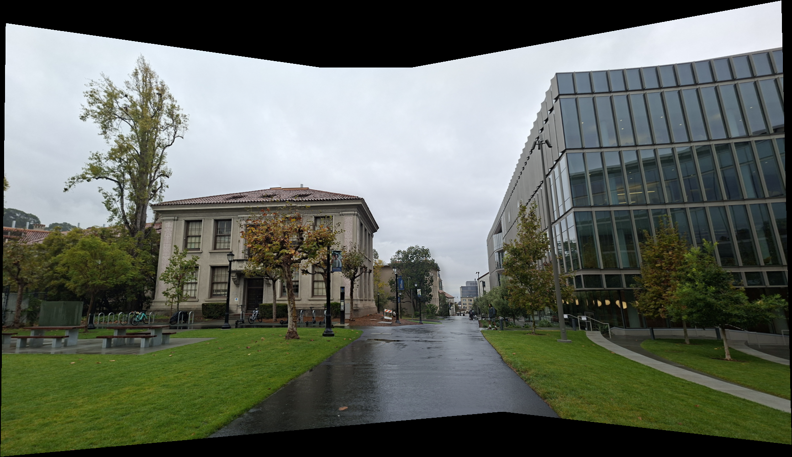
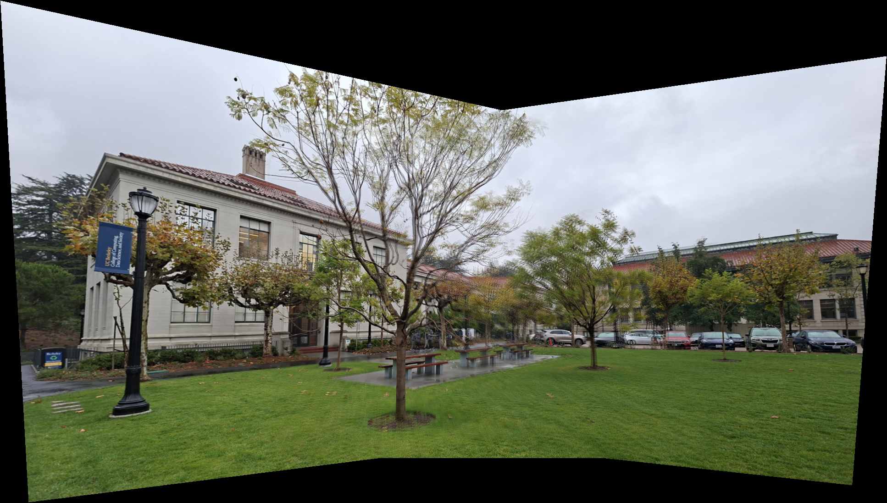
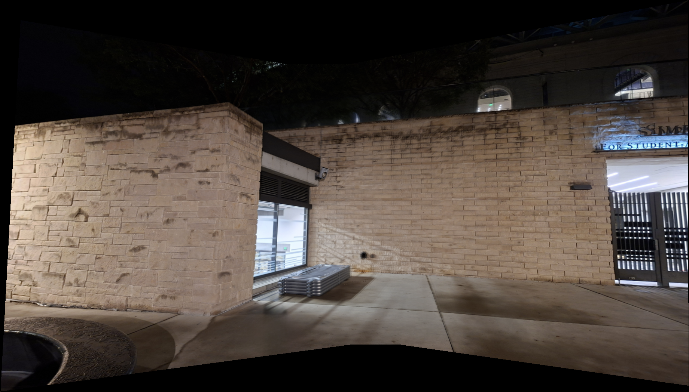
A planar mosaic maps everything onto one image plane, so images far from the reference get stretched. For example, in set 2 the homography for image 1 to image 2 has \(h_{11} = 1.84\) and \(h_{22} = 1.63\). A cylinder is a better model for a camera that pans. I project every photo onto a cylinder of radius \(f\) (the focal length in pixels), after which a pure camera rotation about the vertical axis becomes a horizontal translation between neighbouring images. Stitching then needs only a translation instead of a full homography.
For each pixel \((u, v)\) of the cylindrical image (measured from the image center), with \(\theta = u / f\): $$ x_{src} = f\tan\theta + c_x, \qquad y_{src} = \frac{v}{\cos\theta} + c_y $$ Every output pixel is sampled (bilinearly) directly from the original photo with no intermediate resampling, which keeps the full original resolution. I also implemented the forward mapping $$ (x, y) \rightarrow \left( f\arctan\frac{x - c_x}{f},\; \frac{f\,(y - c_y)}{\sqrt{(x - c_x)^2 + f^2}} \right) $$ so that correspondences can be clicked on the original photos and then projected onto the cylinder.
Instead of guessing the camera's focal length, I search over \(f\) / (image width) from 0.4 to 1.8 for the value at which the projected correspondences of neighbouring images differ by a single pure translation (minimum RMS residual after subtracting the best-fit translation). The translation for each pair is then the mean displacement of its projected points. The images are chained to the middle image and blended with the same two-band code as in A.4.
| Cylindrical mosaic | f / image width | f (image width 1000 px) | Translation-fit RMS residual |
|---|---|---|---|
| Set 1 | 0.670 | 670 px | 5.67 px |
| Set 2 | 0.702 | 702 px | 4.37 px |
def cylinder_forward(pts, shape, f):
h, w = shape[:2]
cx, cy = (w - 1) / 2.0, (h - 1) / 2.0
p = np.asarray(pts, float)
dx = p[:, 0] - cx
u = f * np.arctan(dx / f)
v = f * (p[:, 1] - cy) / np.hypot(dx, f)
return np.c_[u + (_cyl_width(shape, f) - 1) / 2.0, v + cy]
def estimate_cyl_ratio(pair_pts, shapes, lo=0.4, hi=1.8):
rs = np.linspace(lo, hi, 281)
c = [_cyl_residual(pair_pts, shapes, r) for r in rs]
k = int(np.argmin(c))
rs2 = np.linspace(rs[max(k - 1, 0)], rs[min(k + 1, len(rs) - 1)], 101)
c2 = [_cyl_residual(pair_pts, shapes, r) for r in rs2]
j = int(np.argmin(c2))
return float(rs2[j]), float(c2[j])
def cylindricalWarp(im, f):
im4 = _premult(im)
h, w, _ = im4.shape
cx, cy = (w - 1) / 2.0, (h - 1) / 2.0
ow = _cyl_width(im4.shape, f)
u = np.arange(ow) - (ow - 1) / 2.0
v = np.arange(h) - cy
U, V = np.meshgrid(u, v)
th = U / f
sx = f * np.tan(th) + cx
sy = V / np.cos(th) + cy
vals, _ = _sample(im4, sx.ravel(), sy.ravel(), "bilinear")
return _unpremult(vals.reshape(h, ow, -1))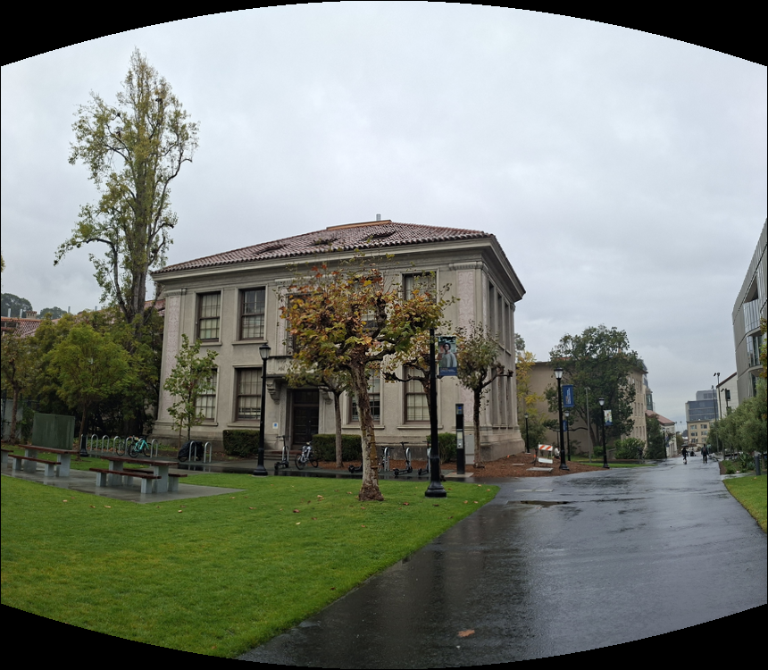
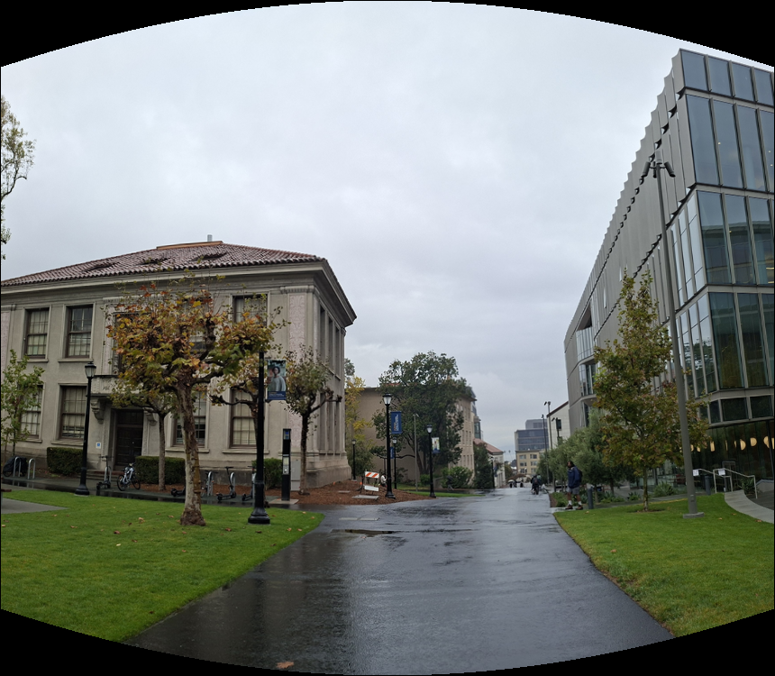
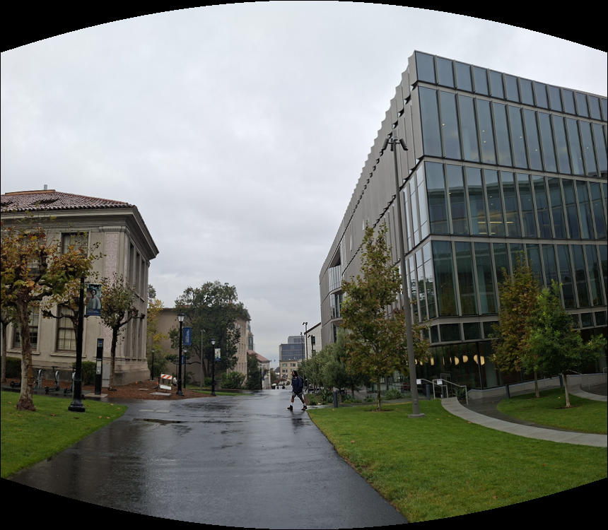
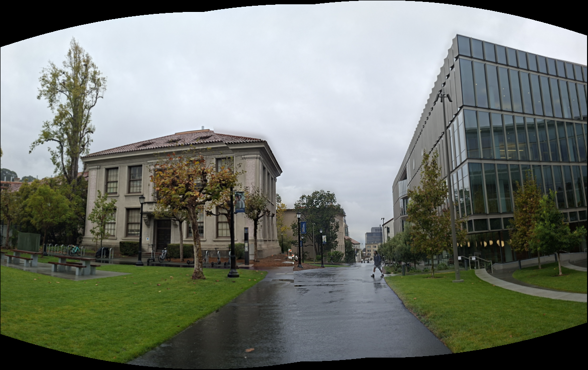
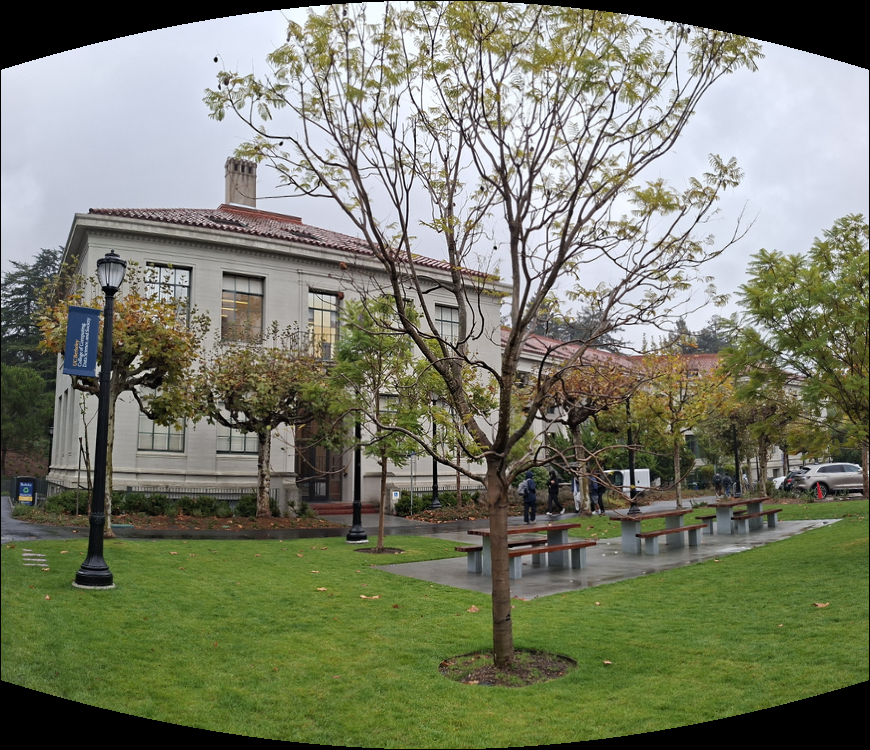
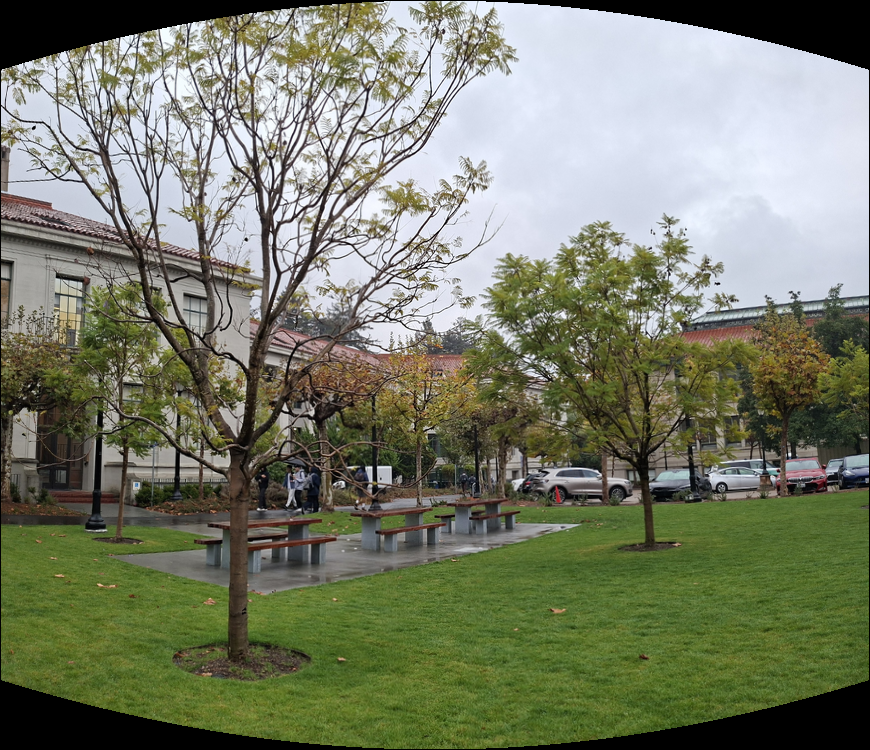
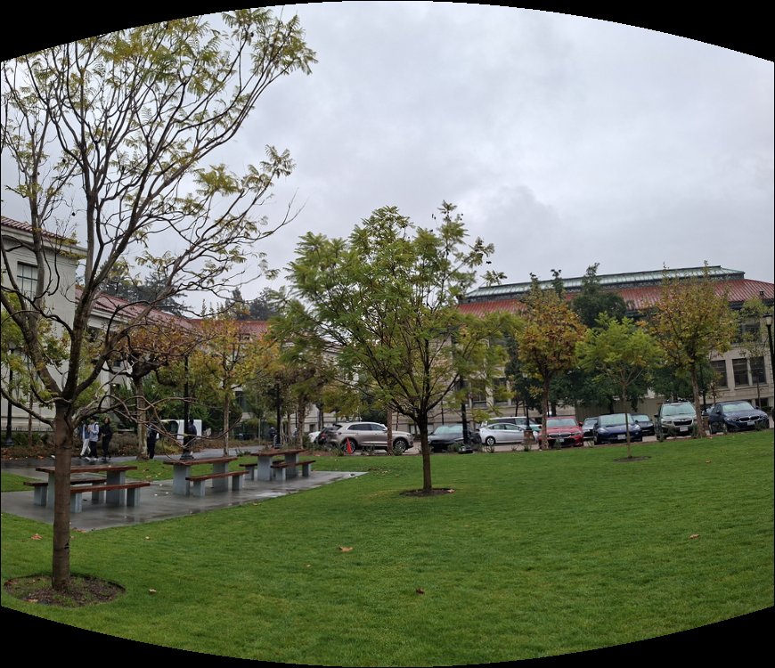
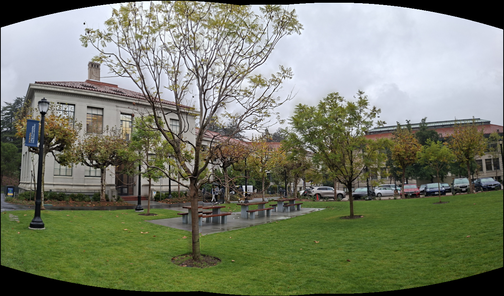
In Part A, every correspondence was clicked by hand. In Part B, the computer finds them.
I use the same three photo sets as Part A, downscaled to a longest side of 1000 px. Points are still (x, y) = (column, row). Only the source of the
correspondences changes: the warping (_warp, bilinear), the two-band blending (build_mosaic), the least-squares
computeH from A.2, and the chaining to the middle image (homographies_to_reference) are the Part A functions, unchanged.
All of Part B is vectorized NumPy/SciPy. No feature-detection or RANSAC library is used.
I convert the image to grayscale and compute the gradients \(I_x, I_y\) with derivative-of-Gaussian filters at \(\sigma_d = 1\). The products \(I_x^2\), \(I_y^2\), \(I_xI_y\) are smoothed with a Gaussian at \(\sigma_i = 1.5\sigma_d\) to form the structure tensor \(S = \begin{bmatrix} S_{xx} & S_{xy} \\ S_{xy} & S_{yy} \end{bmatrix}\), and the corner strength is the harmonic mean of its eigenvalues, $$ f_{HM} = \frac{\det S}{\operatorname{tr} S} = \frac{\lambda_1\lambda_2}{\lambda_1 + \lambda_2}, $$ which is large only when both eigenvalues are large (a corner, not an edge). A pixel is a corner candidate if it is a 3×3 local maximum of \(f_{HM}\) and its response is at least 1% of the strongest response in the image. As the assignment says, I use a single scale and no sub-pixel refinement. Candidates within 20 px of the border are discarded so that the 40×40 descriptor window always fits inside the image.
Simply keeping the strongest 500 corners tends to cluster them in a few high-contrast regions and leaves other regions (which may contain the overlap between two photos) without any features. ANMS instead keeps corners that are strong and spread out. For each corner \(\mathbf{x}_i\) I compute its suppression radius, the distance to the nearest corner that is significantly stronger: $$ r_i = \min_{j}\; \lVert \mathbf{x}_i - \mathbf{x}_j \rVert \quad \text{s.t.} \quad f(\mathbf{x}_i) < c_{robust}\, f(\mathbf{x}_j), \qquad c_{robust} = 0.9 $$ and keep the 500 corners with the largest radii. The strongest corner in the image has no stronger neighbour, so its radius is infinite and it is always kept. Implementation: I sort the corners by strength, so that only the corners before \(i\) in the list can dominate corner \(i\), and compute each radius with one vectorized NumPy distance computation (the candidate list is capped at 10,000 corners, and the images here had 2,295 to 5,777).
def harris_corners(gray, edge_discard=20):
h, coords = get_harris_corners(gray, edge_discard)
ys, xs = coords
strengths = h[ys, xs]
keep = strengths > HARRIS_THRESH_REL * h.max()
ys, xs, strengths = ys[keep], xs[keep], strengths[keep]
order = np.argsort(-strengths)[:MAX_CANDIDATES]
return h, np.c_[xs, ys][order].astype(float), strengths[order]
def anms(pts, strengths, n_keep, c_robust=C_ROBUST, chunk=500):
order = np.argsort(-strengths)
pts, s = pts[order], strengths[order]
n = len(s)
radii = np.full(n, np.inf)
for i0 in range(0, n, chunk):
i1 = min(n, i0 + chunk)
D2 = dist2(pts[i0:i1], pts[:i1])
dominated = c_robust * s[None, :i1] > s[i0:i1, None]
radii[i0:i1] = np.where(dominated, D2, np.inf).min(axis=1)
keep = np.argsort(-radii, kind="stable")[:n_keep]
return pts[keep], s[keep]Each figure shows (left) all Harris corners, (middle) the 500 strongest corners without ANMS, and (right) the 500 corners chosen with ANMS.
| Set | Image | Harris corners detected | Kept after ANMS |
|---|---|---|---|
| 1 | 1 | 6041 | 500 |
| 1 | 2 | 5474 | 500 |
| 1 | 3 | 5471 | 500 |
| 2 | 1 | 10000 | 500 |
| 2 | 2 | 10000 | 500 |
| 2 | 3 | 9952 | 500 |
| 3 | 1 | 3913 | 500 |
| 3 | 2 | 4447 | 500 |
| 3 | 3 | 3413 | 500 |
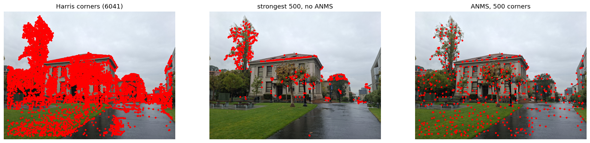
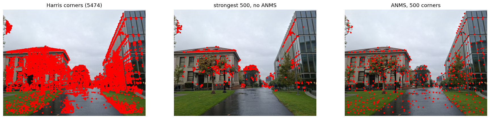
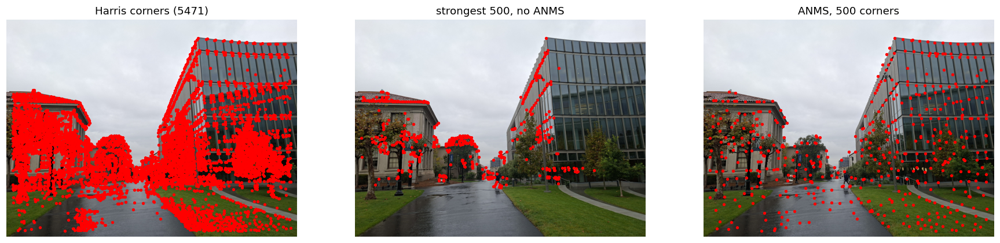
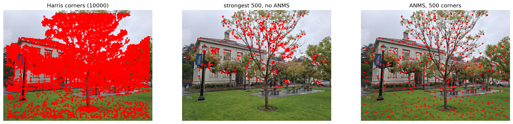
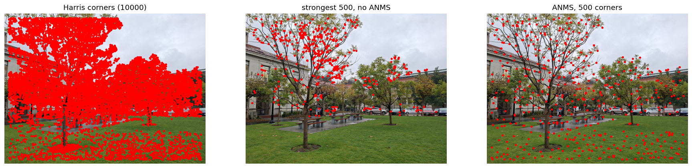
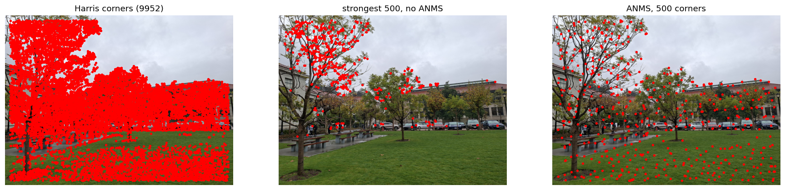
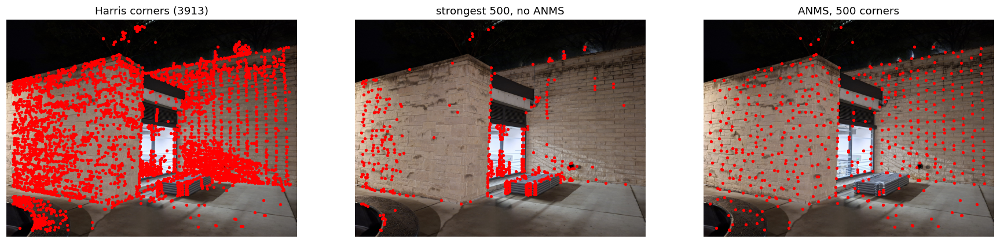
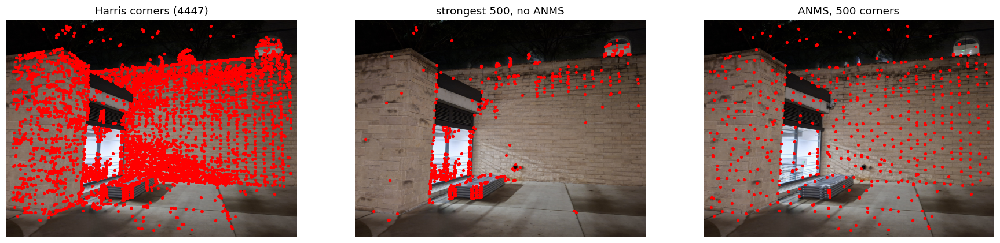
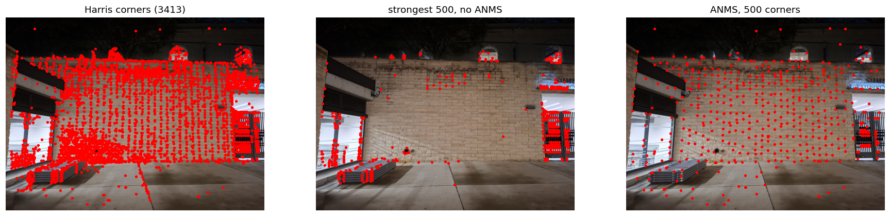
For every ANMS corner I build a descriptor in three steps:
These descriptors are axis-aligned (no rotation invariance in the base pipeline; see B.5), and, as instructed, I skip the wavelet transform part of the descriptor section of the paper.
def extract_descriptors(gray, pts, rotation_invariant=False):
blurred = ndimage.gaussian_filter(gray, DESC_BLUR_SIGMA)
spacing = WINDOW / PATCH
offs = (np.arange(PATCH) - (PATCH - 1) / 2.0) * spacing
U, V = np.meshgrid(offs, offs)
if rotation_invariant:
gx = ndimage.gaussian_filter(gray, ORIENT_SIGMA, order=(0, 1))
gy = ndimage.gaussian_filter(gray, ORIENT_SIGMA, order=(1, 0))
descs = []
for x, y in pts:
if rotation_invariant:
xi, yi = int(round(x)), int(round(y))
th = np.arctan2(gy[yi, xi], gx[yi, xi])
c, s = np.cos(th), np.sin(th)
X, Y = x + c * U - s * V, y + s * U + c * V
else:
X, Y = x + U, y + V
patch = ndimage.map_coordinates(blurred, [Y, X], order=1, mode="reflect")
descs.append(((patch - patch.mean()) / (patch.std() + 1e-8)).ravel())
return np.array(descs)For eight corners spread across the ANMS list of image 1 of each set, the rows show the raw 40×40 window, the blurred window, and the resulting normalized 8×8 descriptor.
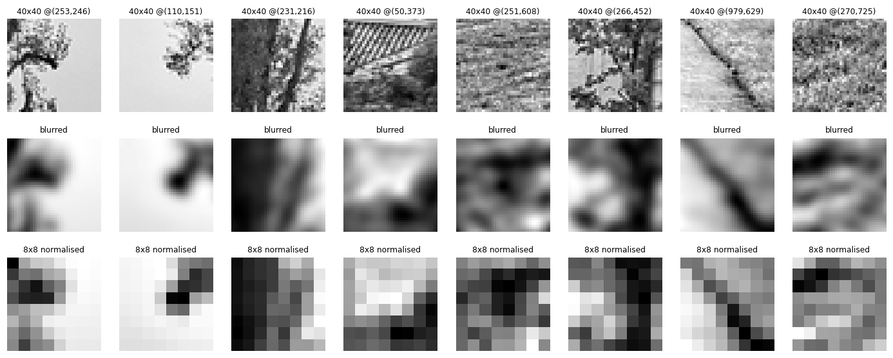
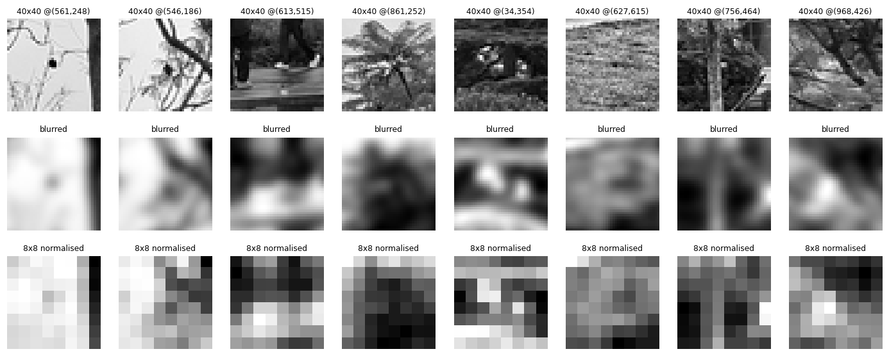
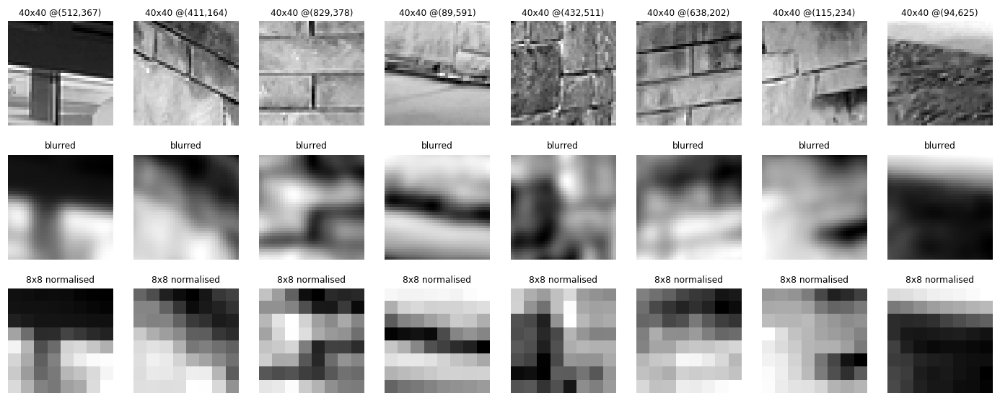
For two neighbouring images, I compute the Euclidean distance between every descriptor of image A and every descriptor of image B (a 500 × 500 matrix with
scipy.spatial.distance.cdist). For each feature in A, I find its nearest neighbour (1-NN) and second nearest neighbour (2-NN) in B and accept the match only if
$$ \frac{d_{1\text{-}NN}}{d_{2\text{-}NN}} < 0.7. $$
This is the thresholding approach due to Lowe. A distinctive feature has a clearly closer best match than the runner-up (small ratio), whereas for a wrong match
(repeated texture, or a feature that has no counterpart in the other image) the best and second-best distances are similar and the ratio is close to 1. As Figure 6b of the paper shows,
thresholding this ratio separates correct from incorrect matches much better than thresholding the 1-NN distance alone, because the
absolute distance of a correct match varies a lot from feature to feature while the ratio adapts to how distinctive each feature is.
I used 0.7, a point on the trade-off between rejecting wrong matches and keeping enough correct ones (a lower threshold gives fewer, cleaner matches; a higher one gives more, noisier matches). Since RANSAC follows, I prefer
to keep somewhat more matches rather than too few. In practice about 91–96% of the matches that survive are RANSAC inliers (table in B.4), so this threshold works well here.
As instructed, I ignore Section 6 of the paper (fast matching); with only 500 features per image, the exhaustive distance matrix is cheap.
def match_features(d1, d2, ratio=RATIO_THRESH, cross_check=CROSS_CHECK):
D = np.sqrt(np.maximum(dist2(d1, d2), 0))
nn = np.argsort(D, axis=1)[:, :2]
rows = np.arange(len(d1))
keep = D[rows, nn[:, 0]] / (D[rows, nn[:, 1]] + 1e-12) < ratio
if cross_check:
keep &= np.argmin(D, axis=0)[nn[:, 0]] == rows
return np.stack([rows[keep], nn[keep, 0]], axis=1)Each yellow line joins a feature in the left image to its match in the right image. Correct matches form a coherent pattern, and the lines that break that pattern are the wrong matches that RANSAC removes in B.4.
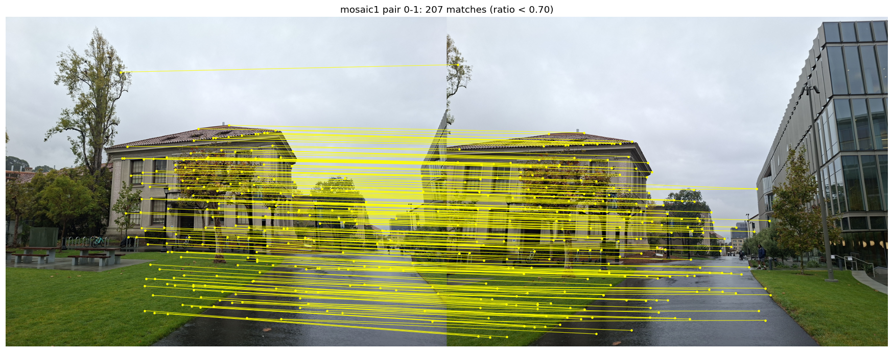
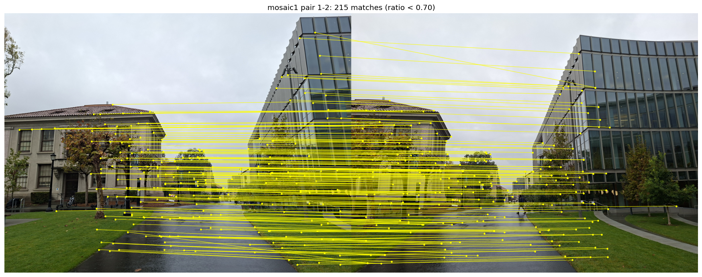
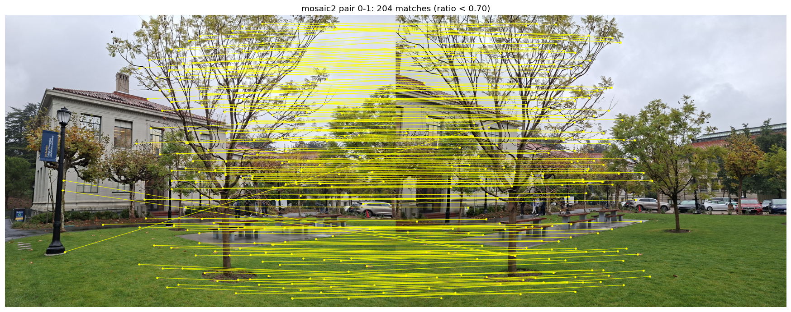
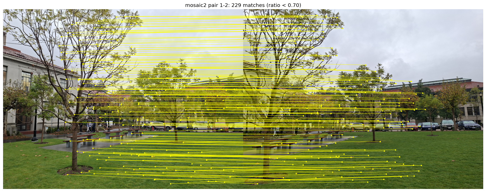
Least squares (A.2) is badly thrown off by even a few wrong matches, so I use RANSAC. Given the putative matches \(\{(p_i, p_i')\}\) from B.3, I repeat 5000 times:
computeH).
Finally, I re-estimate \(H\) by least squares over all inliers of the best model (the same computeH, now with about 200 correspondences instead of 4) and refit the
inlier set once with this \(H\). Parallax and moving objects produce matches that are consistent with no single homography; these are outliers like any other.
Number of iterations. If a fraction \(p\) of the matches are inliers, a random 4-sample is all inliers with probability \(p^4\), so \(N = \log(1 - 0.999)/\log(1 - p^4)\)
iterations find a good sample with 99.9% confidence. For \(p = 0.5\) this is about 107 iterations, and for \(p = 0.3\) about 850. My inlier fractions here are above 90%, so 5000 iterations is a very large safety margin, and each iteration is cheap because it only solves an 8×8 system.
def _collinear_triple(p, tol=1e-3):
scale = np.ptp(p, axis=0).max() ** 2 + 1e-12
for a, b, c in ((0, 1, 2), (0, 1, 3), (0, 2, 3), (1, 2, 3)):
u, v = p[b] - p[a], p[c] - p[a]
if abs(u[0] * v[1] - u[1] * v[0]) / 2 / scale < tol:
return True
return False
def ransac_homography(p1, p2, n_iters=RANSAC_ITERS, eps=RANSAC_EPS, seed=SEED):
p1, p2 = np.asarray(p1, float), np.asarray(p2, float)
n = len(p1)
if n < 4:
raise ValueError("need at least 4 matches for a homography, got %d" % n)
rng = np.random.default_rng(seed)
best, best_count = None, 0
for _ in range(n_iters):
idx = rng.choice(n, 4, replace=False)
if _collinear_triple(p1[idx]) or _collinear_triple(p2[idx]):
continue
H = computeH(p1[idx], p2[idx])
if not np.all(np.isfinite(H)):
continue
with np.errstate(all="ignore"):
err = np.linalg.norm(applyH(H, p1) - p2, axis=1)
inl = err < eps
if inl.sum() > best_count:
best, best_count = inl, int(inl.sum())
if best is None or best_count < 4:
raise RuntimeError("RANSAC found no consistent homography")
H = computeH(p1[best], p2[best])
inl = np.linalg.norm(applyH(H, p1) - p2, axis=1) < eps
return (computeH(p1[inl], p2[inl]), inl) if inl.sum() >= 4 else (H, best)Green lines are the RANSAC inliers and red lines are the outliers that were rejected. In every pair the large majority of matches are inliers.
| Pair | Matches (ratio < 0.7) | RANSAC inliers | Outliers | Inlier ratio |
|---|---|---|---|---|
| Set 1, image 1 → 2 | 207 | 187 | 20 | 90.3% |
| Set 1, image 2 → 3 | 215 | 194 | 21 | 90.2% |
| Set 2, image 1 → 2 | 204 | 189 | 15 | 92.6% |
| Set 2, image 2 → 3 | 229 | 216 | 13 | 94.3% |
| Set 3, image 1 → 2 | 185 | 169 | 16 | 91.4% |
| Set 3, image 2 → 3 | 161 | 141 | 20 | 87.6% |
For each set, the left image is the manual mosaic from Part A (8 hand-clicked correspondences per pair, least-squares homography) and the right image is the automatic mosaic from Part B (Harris + ANMS + descriptors + ratio test + 4-point RANSAC; \(H\) refit on all inliers). Both use exactly the same pipeline after the homographies are known: the middle photo is the reference, the images are warped with bilinear inverse warping, and they are combined with the same two-band blend. So any difference between the two columns comes only from the homographies.
Visual comparison: Visually, both the Manual and Automatic mosaics are indistinguishable from one another. The biggest difference is the amount of evidence behind each homography. The manual mosaics use 8 correspondences per pair, each with a click error of a pixel or two (the mean reprojection errors in A.2 are 0.63 – 1.91 px), and I deliberately chose them on distant, static structure. The automatic mosaics use 156 – 243 correspondences per pair, about 20 to 30 times as many, spread over the whole overlap region and each localized to within the 3 px inlier threshold, and the least-squares fit averages the noise of all of them down. The automatic method also needs no human time, whereas clicking 16 points per image pair is slow and has to be repeated for every new set of photos. The trade-off is that the automatic correspondences are not hand-checked. They are only as good as the detector, the descriptor, and the inlier test, and features on nearby objects that violate the single-plane model are simply discarded by RANSAC as outliers instead of being avoided by a human.
The base descriptor of B.2 samples its 8×8 grid along the image axes, so if the camera is rolled between two shots, the same scene point has a rotated patch and no longer matches. Following the paper, I make the descriptor rotation invariant by sampling the grid along each corner's own dominant orientation:
The code is the rotation_invariant=True branch of extract_descriptors shown in B.2.
To test it, I rotated image 1 of set 1 by 35° and matched the original against the rotated copy with exactly the same detection, ratio test (0.7), and RANSAC as before. The mosaics above use the plain axis-aligned descriptors, since the photos were taken without rolling the camera, so the orientation estimate would not add anything there.
| Descriptor | Ratio-test matches | RANSAC inliers |
|---|---|---|
| Axis-aligned (B.2) | 2 | 0 (fewer than the 4 matches needed to fit a homography) |
| Rotation-invariant | 136 | 128 (94.1%) |
With the axis-aligned descriptor, only one match survives the ratio test, so RANSAC cannot even be run. With the rotation-invariant descriptor, 208 matches survive and 205 of them agree with a single homography, which shows that the orientation estimate rotates the sampling grid consistently with the image.
I detected Harris corners, spread 500 of them evenly over each image with ANMS, describe them with normalized 8 × 8 patches sampled from blurred 40 × 40 windows, match them with the 1-NN/2-NN ratio test, and estimate each homography with my own 4-point RANSAC. This produced three automatic mosaics that I can compare directly with the manual mosaics from Part A. The most useful lessons were that ANMS is a cheap way to avoid leaving regions of an image without features, that the ratio test removes most wrong matches without any knowledge of the geometry, and that RANSAC takes care of the rest, so that 91 – 96% of the remaining matches were consistent with one homography. The most interesting part is that the whole thing runs without a single click, and that adding rotation invariance only required rotating the sampling grid.